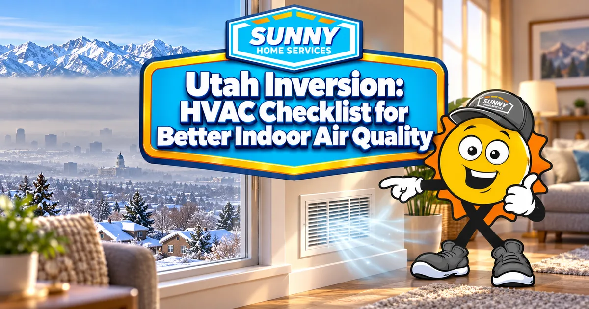

385.853.8116

A Utah inversion can turn a crisp winter morning gray, and the haze doesn’t stay outside. The air inside your home takes a hit too, which is why your HVAC system matters more in January than most people realize. Sunny Home Services brings more than 50 years of combined experience to the Wasatch Front, and our technicians understand the demands Utah’s winter weather places on home comfort systems. This checklist covers what to do before the smog settles in and how to protect your home once it does.
A Utah inversion occurs when a layer of warm air sits above colder air near the ground, trapping pollution in the valley. During a Salt Lake City inversion, this pattern can raise fine-particle pollution levels across the Wasatch Front. Normally, air cools as it rises and carries pollutants up and away. An inversion flips that order. The Salt Lake Valley’s surrounding mountains and local topography contribute to these conditions. When a temperature inversion develops and winds are weak, pollutants can accumulate near the ground until changing weather helps disperse them. Salt Lake City inversion episodes are most common during the colder months. Episodes can last several days. During a Wasatch Front inversion, fine particles known as PM2.5 can reach unhealthy concentrations.
Indoor air quality during an inversion can decline when outdoor particles enter through doors, windows, building gaps, poorly sealed ductwork, and ventilation systems. Proper filtration can reduce some airborne particles that pass through your HVAC system, but it cannot prevent all outdoor pollution from entering or remove every indoor pollutant. Tighter homes may limit uncontrolled air exchange, but indoor pollutant levels also depend on ventilation, filtration, and activities such as cooking and burning candles. PM2.5 particles are small enough to penetrate deep into the lungs. Children, older adults, and people with asthma or other heart and lung conditions can be more vulnerable to health effects. For a full picture of your options, start with our indoor air quality solutions.
The best time to start this Utah inversion HVAC checklist is early fall, alongside a seasonal HVAC tune-up. A professional inspection can help identify maintenance needs before the Wasatch Front’s coldest weather arrives.
Consider a MERV 13 filter if your HVAC system is designed to accommodate it. MERV 13 filters capture at least 50% of particles measuring 0.3 to 1.0 microns and capture larger particles more efficiently. Check your equipment specifications or ask an HVAC technician before upgrading, because an incompatible filter can restrict airflow and affect system performance. During inversion season, inspect monthly and replace your air filter as needed.
Leaky ducts can lose conditioned air and draw dust and other contaminants from attics, crawl spaces, or other unconditioned areas. Professional duct sealing can reduce leakage and limit air movement from unconditioned spaces into your home. Duct cleaning may be appropriate when there is substantial debris or another specific contamination concern. Visible dust around a register alone does not necessarily mean the entire duct system needs cleaning.
Your furnace works hardest just as Salt Lake City inversions hit, so it should be in top shape before then. Our technicians inspect burners, flame sensors, blower motors, and heat exchangers, and they photograph what they find so you can see it for yourself. Regular furnace maintenance helps identify developing issues, check system operation, and reduce the risk of unexpected breakdowns during a January cold snap.
A compatible whole-house air cleaner can treat air moving through your HVAC system and help reduce airborne particles throughout the home. The results depend on the system’s design, filtration efficiency, and airflow. A whole-house air purifier may complement a suitable furnace filter.
Small habits can help reduce exposure during a Utah inversion:
Not sure where to start? A technician can look at it the same day and tell you what it needs.
Book NowYes, you can generally run your HVAC system during a Utah inversion. When air passes through a suitable filter, it captures some airborne particles before the air circulates back into your home. How much pollution the system removes depends on the filter, airflow, and how the system operates. If your home has a fresh-air intake or mechanical ventilation system, ask an HVAC technician how to manage it during severe outdoor pollution without compromising required ventilation or equipment safety.
Call a technician when your system struggles to keep the air clean or your furnace starts acting up. Look for these warning signs during the Wasatch Front inversion season:
If a carbon monoxide alarm sounds, leave the home and call 911 first.
Sunny Home Services offers same-day response for no-heat emergencies, plus a text with your arrival window and technician bio before the visit. You’ll receive upfront, flat-rate pricing to approve before work begins. Our technicians are background-checked, drug-tested, uniformed, and certified, and our work is backed by a satisfaction guarantee. Ready to make your home a cleaner place to breathe? Contact us to book a visit.


When you need HVAC and plumbing services along the Wasatch Front, count on Sunny Home Services for fast, honest, technology-driven solutions. With same-day response, upfront flat-rate pricing, and heating, cooling, and plumbing all under one roof, you’ll have a company you can trust for the whole home.